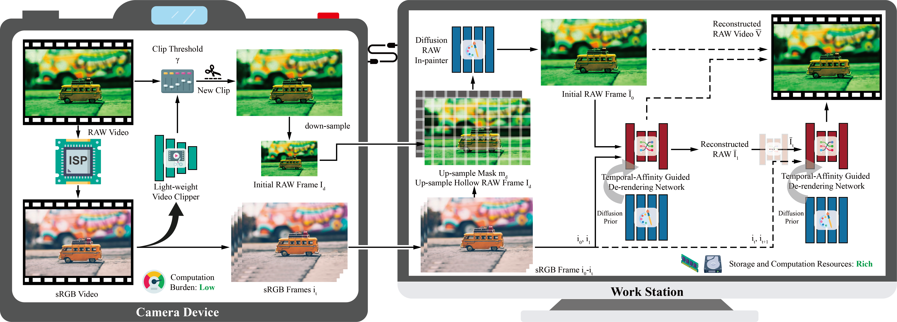

Due to the rich information and original data distribution, RAW data are widely used in many computer vision applications. However, the use of RAW video remains limited because of the high storage costs associated with data collection. Previous works have attempted to reconstruct RAW frames from sRGB data using small sampled metadata from the original RAW frame. Yet, these algorithms struggle with RAW video reconstruction due to the high computational cost of sampling metadata on cameras.
To address these issues, we propose a new RAW video reconstruction pipeline that de-renders high-quality RAW videos from sRGB data using only one initial RAW frame as a reference. Specifically, we introduce three new models to achieve this goal. First, we present the Temporal-Affinity Guided De-rendering Network. This network leverages the temporal affinity between adjacent frames to construct a reference RAW image from previous RAW pixels. The corresponding RAW pixels in the previous frame provide valuable information about the original RAW data distribution, aiding in the precise reconstruction of the current frame. Second, to recover the missing RAW pixels caused by camera and foreground movement, we fully exploit the rich prior information from a pre-trained diffusion model and propose the RAW In-painting Model. This model can accurately fill in hollow regions in a RAW image based on the corresponding sRGB image and the surrounding RAW context.
Lastly, we present a lightweight content-aware video clipper that automatically adjusts the clip length used for RAW video reconstruction, thereby balancing storage requirements with reconstruction quality.
To better evaluate the performance of the proposed framework across different devices, we introduce the first RAW video reconstruction benchmark that comprises RAW videos from six types of camera devices with challenging scenarios.
Experimental results demonstrate that our algorithm can accurately reconstruct RAW videos across all these scenarios.
Overall Pipeline
